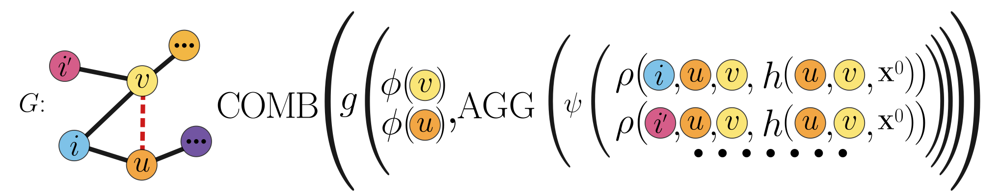
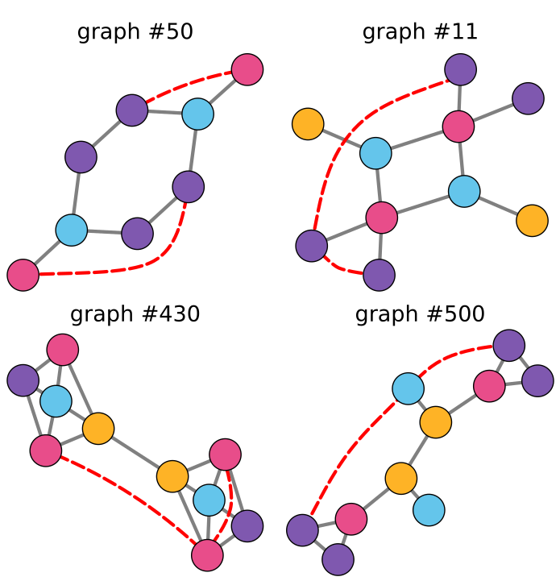

When Links Look the Same: Expressive GNNs for Link Representation
A link is more than two node embeddings. This work studies when message-passing graph neural networks can distinguish node pairs, how to compare their expressive power, and why graph symmetry matters for link prediction.
The problem: links are not just two node embeddings
Graph neural networks (GNNs) are often used for link prediction, link classification, and link regression. In this paper, a link means any pair of nodes, whether or not an edge is currently observed between them.
The central problem is expressive power at the link level. Standard message-passing GNNs usually compute an embedding for each endpoint node and then combine the two endpoint embeddings. That works in many settings, but it can collapse different links into the same representation when the endpoint nodes are symmetric in the graph.
This matters because link prediction often depends on structural differences between node pairs. If a model cannot distinguish two structurally different candidate links, it cannot use that distinction downstream, no matter how well the final classifier is trained.
What existing link GNNs do
Earlier theory on GNN expressiveness mostly focused on graph-level representations and their relationship to the one-dimensional Weisfeiler-Lehman test, also called 1-WL. Link representation is different: the object to represent is a pair of nodes inside a graph.
Existing link methods address this in different ways. Pure GNN methods, such as graph auto-encoder style models, combine the final embeddings of the two endpoint nodes. NCN and NCNC add common-neighbor information. ELPH and BUDDY add count-based structural features, using sketching or precomputation for scalability. Neo-GNN uses neighborhood overlap-aware structural information. SEAL extracts an enclosing subgraph around the target link and labels nodes by their distances to the two endpoints.
These approaches all try, in different forms, to give the model information about the pair itself rather than only information about the two individual nodes. Before this paper, however, they were not organized in a single formal framework for comparing link-level expressiveness.
The contribution: a framework for link expressiveness
The paper introduces a unifying kϕ-kρ-m framework for message-passing link representation models. The framework separates two sources of information: representations of the two endpoint nodes, and representations aggregated from an m-hop neighborhood around the node pair.
This gives a principled way to compare models. The analysis shows that models using only endpoint representations have a fundamental limitation: even with expressive node encoders, they cannot distinguish certain links whose endpoints are automorphic. Adding link-neighborhood information can strictly increase expressiveness. Increasing the expressive power of the neighborhood encoder can also increase the ability to distinguish links.
Using this framework, the paper derives an expressiveness hierarchy for common link representation methods. In the analyzed setting, NCN, Neo-GNN, ELPH, and SEAL are more expressive than pure GNN link models, and SEAL is the most expressive among the compared methods.
The key idea: represent the link, not only its endpoints
The key idea is simple: a link representation should see the local structure around the pair. The framework combines endpoint representations with an aggregation over the target link's neighborhood, where the neighborhood can use modified node features and pairwise structural information.

kϕ-kρ-m framework represents a target link by combining endpoint representations with information aggregated from the pair's local neighborhood.
The framework also clarifies an important modeling choice. The radius m of the link neighborhood is not the same as the depth of the message-passing function used inside that neighborhood. A model can look at a larger neighborhood with shallow processing, or a smaller neighborhood with more message passing. The theory explains how those choices affect expressiveness.
Testing link-level expressiveness
To evaluate expressiveness directly, the paper introduces LR-EXP, a synthetic benchmark for link-level expressiveness. LR-EXP contains 1400 graphs. Each graph includes pairs of links that are non-automorphic, meaning graph symmetries cannot map one link to the other, while their endpoint nodes have the same 1-WL colors. This makes the task hard for standard endpoint-based GNNs.

The evaluation uses a siamese setup: the same model embeds two candidate links, and a contrastive objective encourages non-automorphic links to receive different representations. A reliable paired comparison procedure then checks whether the learned representations are distinguishable.
The reported LR-EXP results follow the theoretical hierarchy. Pure GNN baselines such as GCN, GAT, GAE, and GraphSAGE obtain 0 percent test precision. BUDDY reaches 45 percent, ELPH 62 percent, Neo-GNN and NCN 75 percent, and SEAL 97 percent, averaged over five runs where reported.
When expressiveness matters in practice
The paper then asks whether link-level expressiveness helps on real-world link prediction benchmarks. The answer depends on graph symmetry.
The authors define a graph symmetry measure based on node orbits under graph automorphisms, and approximate it with colors from the Weisfeiler-Lehman test: r̂G = 1 - (|WLG| - 1) / (|VG| - 1). Higher values indicate more structural ambiguity among nodes and, by extension, a greater chance that endpoint-based link representations will struggle.
Across twelve real-world link prediction datasets evaluated with mean reciprocal rank (MRR), the results show a clear pattern. On low-symmetry datasets, pure GNNs can still be competitive. On the six most symmetric datasets in the reported table, none of the pure GNN models appears among the top three. SEAL, the most expressive model in the hierarchy, ranks first across the high-symmetry datasets reported in the paper.
The practical message is not that the most expressive model is always best. The message is more useful: model selection should depend on the structure of the dataset. When node features are informative and symmetry is low, simpler models may be enough. When structural ambiguity is high, link-aware expressive models become much more important.
Main takeaway
This work connects theory, diagnostics, and empirical behavior for GNN link representation. It shows why endpoint-only link embeddings can fail, provides a framework for comparing message-passing link models, introduces LR-EXP to test link-level expressiveness, and proposes graph symmetry as a practical signal for choosing a model.
Limitations
The framework is designed for message-passing models. The paper notes that it does not directly cover transformer-based or spectral methods for link representation. The authors also note that the high-symmetry real-world datasets used in the evaluation are relatively small, which motivates larger benchmarks for studying link-level expressiveness and generalization.
Main references
- Xu, Hu, Leskovec, and Jegelka. How Powerful are Graph Neural Networks? International Conference on Learning Representations, 2019.
- Morris, Ritzert, Fey, Hamilton, Lenssen, Rattan, and Grohe. Weisfeiler and Leman Go Neural: Higher-Order Graph Neural Networks. AAAI Conference on Artificial Intelligence, 2019.
- Zhang and Chen. Link Prediction Based on Graph Neural Networks. Advances in Neural Information Processing Systems, 2018.
- Zhang, Li, Xia, Wang, and Jin. Labeling Trick: A Theory of Using Graph Neural Networks for Multi-Node Representation Learning. Advances in Neural Information Processing Systems, 2021.
- Chamberlain, Shirobokov, Rossi, Frasca, Markovich, Hammerla, Bronstein, and Hansmire. Graph Neural Networks for Link Prediction with Subgraph Sketching. International Conference on Learning Representations, 2023.
- Wang, Yang, and Zhang. Neural Common Neighbor with Completion for Link Prediction. International Conference on Learning Representations, 2024.
- Yun, Kim, Lee, Kang, and Kim. Neo-GNNs: Neighborhood Overlap-Aware Graph Neural Networks for Link Prediction. Advances in Neural Information Processing Systems, 2021.
- Li, Shomer, Mao, Zeng, Ma, Shah, Tang, and Yin. Evaluating Graph Neural Networks for Link Prediction: Current Pitfalls and New Benchmarking. NeurIPS Datasets and Benchmarks Track, 2023.
- Ball and Geyer-Schulz. How Symmetric are Real-World Graphs? A Large-Scale Study. Symmetry, 2018.
- Wang and Zhang. An Empirical Study of Realized GNN Expressiveness. International Conference on Machine Learning, 2024.
Source note
This page summarizes Bridging Theory and Practice in Link Representation with Graph Neural Networks by Veronica Lachi, Francesco Ferrini, Antonio Longa, Bruno Lepri, Andrea Passerini, and Manfred Jaeger, listed in the attached manuscript as appearing at the 39th Conference on Neural Information Processing Systems (NeurIPS 2025). Code is available here.